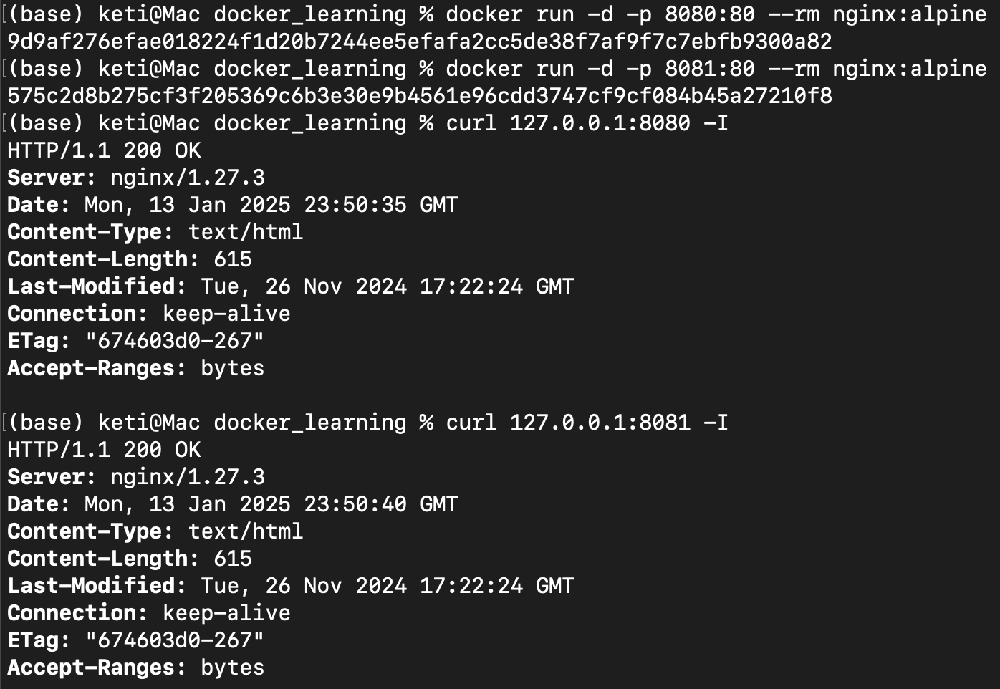
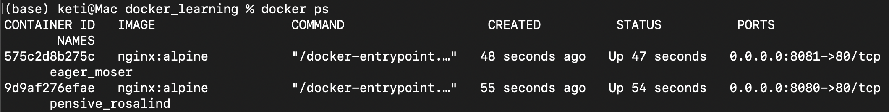

容器如何与外界互联互通
如何拷贝容器内的数据
我们首先来看看Docker提供的 cp 命令，它可以在宿主机和容器之间拷贝文件，是最基本的一种数据交换功能。
试验这个命令需要先用 docker run 启动一个容器，就用 nginx 吧：
docker run -d --rm nginx
注意这里使用了 -d、 --rm 两个参数，表示运行在后台，容器结束后自动删除，然后使用 docker ps 命令可以看到nginx 容器正在运行，容器ID是“00e0fe477e1a”。
% docker run -d --rm nginx
00e0fe477e1a68df03e7af4dbb78072a9656229b97ded055a27f99bead2e17fd
docker ps
CONTAINER ID IMAGE COMMAND CREATED STATUS PORTS NAMES
00e0fe477e1a nginx "/docker-entrypoint.…" 36 seconds ago Up 36 seconds 80/tcp modest_euler
docker cp 的用法很简单，很类似Linux的“cp”“scp”，指定源路径（src path）和目标路径（dest path）就可以了。如果源路径是宿主机那么就是把文件拷贝进容器，如果源路径是容器那么就是把文件拷贝出容器，注意需要用 容器名或者容器ID 来指明是哪个容器的路径。
假设当前目录下有一个“test.txt”的文件，现在我们要把它拷贝进 nginx 容器的“/tmp”目录，如果使用容器ID，命令就会是这样：
docker cp test.txt 00e:/tmp
如何共享主机上的文件
docker cp 的用法模仿了操作系统的拷贝命令，偶尔一两次的文件共享还可以应付，如果容器运行时经常有文件来往互通，这样反复地拷来拷去就显得很麻烦，也很容易出错。
你也许会联想到虚拟机有一种“共享目录”的功能。它可以在宿主机上开一个目录，然后把这个目录“挂载”进虚拟机，这样就实现了两者共享同一个目录，一边对目录里文件的操作另一边立刻就能看到，没有了数据拷贝，效率自然也会高很多。
沿用这个思路，容器也提供了这样的共享宿主机目录的功能，效果也和虚拟机几乎一样，用起来很方便，只需要在 docker run 命令启动容器的时候使用 -v 参数就行，具体的格式是“ 宿主机路径:容器内路径”。
我还是以 nginx 为例，启动容器，使用 -v 参数把本机的“/tmp”目录挂载到容器里的“/tmp”目录，也就是说让容器共享宿主机的“/tmp”目录：
docker run -d --rm -v /tmp:/tmp nginx
然后我们再用 docker exec 进入容器，查看一下容器内的“/tmp”目录，应该就可以看到文件与宿主机是完全一致的。
docker exec -it b42 sh # b42是容器ID
你也可以在容器里的“/tmp”目录下随便做一些操作，比如删除文件、建立新目录等等，再回头观察一下宿主机，会发现修改会即时同步，这就表明容器和宿主机确实已经共享了这个目录。
-v参数挂载宿主机目录的这个功能，对于我们日常开发测试工作来说非常有用，我们可以在不变动本机环境的前提下，使用镜像安装任意的应用，然后直接以容器来运行我们本地的源码、脚本，非常方便。
如何实现网络互通
现在我们使用 docker cp 和 docker run -v 可以解决容器与外界的文件互通问题，但对于Nginx、Redis这些服务器来说，网络互通才是更要紧的问题。
网络互通的关键在于“打通”容器内外的网络，而处理网络通信无疑是计算机系统里最棘手的工作之一，有许许多多的名词、协议、工具，在这里我也没有办法一下子就把它都完全说清楚，所以只能从“宏观”层面讲个大概，帮助你快速理解。
Docker提供了三种网络模式，分别是 null、 host 和 bridge。
null 是最简单的模式，也就是没有网络，但允许其他的网络插件来自定义网络连接，这里就不多做介绍了。
host 的意思是直接使用宿主机网络，相当于去掉了容器的网络隔离（其他隔离依然保留），所有的容器会共享宿主机的IP地址和网卡。这种模式没有中间层，自然通信效率高，但缺少了隔离，运行太多的容器也容易导致端口冲突。
host模式需要在 docker run 时使用 --net=host 参数，下面我就用这个参数启动Nginx：
docker run -d --rm --net=host nginx:alpine
134a045f4f3d1b32f8d8cc8a887c67e559919f23a3e1990dbd367f11f8568595
为了验证效果，我们可以在本机和容器里分别执行 ip addr 命令，查看网卡信息：
ip addr # 本机查看网卡
docker exec 134 ip addr # 容器查看网卡
这两个 ip addr 命令的输出信息是完全一样的，这就证明Nginx容器确实与本机共享了网络栈。
第三种 bridge，也就是桥接模式，它有点类似现实世界里的交换机、路由器，只不过是由软件虚拟出来的，容器和宿主机再通过虚拟网卡接入这个网桥（图中的docker0），那么它们之间也就可以正常的收发网络数据包了。不过和host模式相比，bridge模式多了虚拟网桥和网卡，通信效率会低一些。
和host模式一样，我们也可以用 --net=bridge 来启用桥接模式，但其实并没有这个必要，因为Docker默认的网络模式就是bridge，所以一般不需要显式指定。
下面我们启动两个容器Nginx和Redis，就像刚才说的，没有特殊指定就会使用bridge模式：
docker run -d --rm nginx # 默认使用桥接模式
docker run -d --rm redis # 默认使用桥接模式
然后我们还是在本机和容器里执行 ip addr 命令（Redis容器里没有ip命令，所以只能在Nginx容器里执行）：
对比一下刚才host模式的输出，就可以发现容器里的网卡设置与宿主机完全不同，eth0是一个虚拟网卡，IP地址是B类私有地址“172.17.0.2”。
1: lo: <LOOPBACK,UP,LOWER_UP> mtu 65536 qdisc noqueue state UNKNOWN qlen 1000
link/loopback 00:00:00:00:00:00 brd 00:00:00:00:00:00
inet 127.0.0.1/8 scope host lo
valid_lft forever preferred_lft forever
inet6 ::1/128 scope host
valid_lft forever preferred_lft forever
20: eth0@if21: <BROADCAST,MULTICAST,UP,LOWER_UP,M-DOWN> mtu 65535 qdisc noqueue state UP
link/ether 02:42:ac:11:00:03 brd ff:ff:ff:ff:ff:ff
inet 172.17.0.3/16 brd 172.17.255.255 scope global eth0
valid_lft forever preferred_lft forever
我们还可以用 docker inspect 直接查看容器的ip地址：
docker inspect xxx |grep IPAddress
"SecondaryIPAddresses": null,
"IPAddress": "172.17.0.3",
"IPAddress": "172.17.0.3",
容器的IP地址是“172.17.0.3”，而宿主机的IP地址则是“172.17.0.1”，所以它们都在“172.17.0.0/16”这个Docker的默认网段，彼此之间就能够使用IP地址来实现网络通信了。
如何分配服务端口号
使用host模式或者bridge模式，我们的容器就有了IP地址，建立了与外部世界的网络连接，接下来要解决的就是网络服务的端口号问题。
你一定知道，服务器应用都必须要有端口号才能对外提供服务，比如HTTP协议用80、HTTPS用443、Redis是6379、MySQL是3306。 在学习编写Dockerfile的时候也看到过，可以用 EXPOSE 指令声明容器对外的端口号。
一台主机上的端口号数量是有限的，而且多个服务之间还不能够冲突，但我们打包镜像应用的时候通常都使用的是默认端口，容器实际运行起来就很容易因为端口号被占用而无法启动。
解决这个问题的方法就是加入一个“中间层”，由容器环境例如Docker来统一管理分配端口号，在本机端口和容器端口之间做一个“映射”操作，容器内部还是用自己的端口号，但外界看到的却是另外一个端口号，这样就很好地避免了冲突。
端口号映射需要使用bridge模式，并且在 docker run 启动容器时使用 -p 参数，形式和共享目录的 -v 参数很类似，用 : 分隔本机端口和容器端口。比如，如果要启动两个Nginx容器，分别跑在80和8080端口上：
docker run -d -p 8080:80 --rm nginx:alpine
docker run -d -p 8081:80 --rm nginx:alpine
这样就把本机的80和8080端口分别“映射”到了两个容器里的80端口，不会发生冲突，我们可以用curl再验证一下：

使用 docker ps 命令能够在“PORTS”栏里更直观地看到端口的映射情况：
